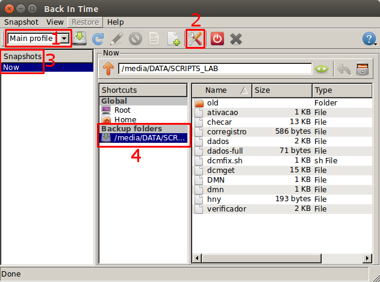

Usuário na máquina virtual, inscer2, no LAD responsável pela configuração do Backintime:
Usuário: backupdata
Senha: A mesma usada em tudo. Se não souber pergunte à Nathalia.
O backintime está configurado para fazer backup seguindo esta agenda semanal. Se necessário solicite acesso para fazer modificações.
Os backups encontram-se no storage, Thalamus.
1) Entre com o usuário backupdata no inscer2. É necessário usar as flags -XY no comando ssh para abrir as interfaces remotas.
2) Abra o Backintime com o comando backintime-qt4. Uma janela deverá abrir.
3) Aperte no botão 2 da imagem anterior (Settings) para criar uma nova rotina para um novo projeto. Deverá abrir uma nova janela como a de baixo. Aperte em Add (1) e preencha, na pequena janela que irá se abrir, a sigla do novo projeto (digite em minúsculo para facilitar).
Após clicar em 'Ok', a janela de Settings será mantida, mas os dados serão resetados. Preencha-os novamente, mantendo as informações contidas nos retângulos azuis inalterados, e modifique somente em (2) e (3) como desejar. Obs: Antes de determinar o período de backup, verifique a planilha de backups para conferir se não haverá overlapping de horários.